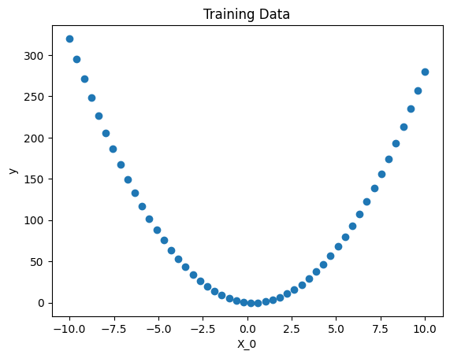
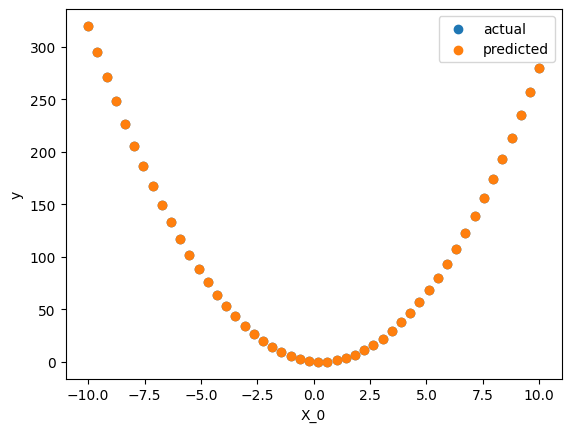

Get Started#
Installation#
If you haven’t already, check out the installation guide to get Bingo setup.
Running an Example#
Let’s run a quick example to ensure that the installation works properly.
Creating Training Data#
[1]:
import numpy as np
X = np.linspace(-10, 10).reshape((-1, 1))
y = 3.0 * X ** 2 - 2.0 * X
Visualizing Training Data#
[2]:
import matplotlib.pyplot as plt
plt.scatter(X, y)
plt.xlabel("X_0")
plt.ylabel("y")
plt.title("Training Data")
plt.show()

Fitting a Model#
[3]:
from bingo.symbolic_regression.symbolic_regressor import SymbolicRegressor
regressor = SymbolicRegressor()
regressor.fit(X, y)
print("Found model:", regressor.get_best_individual())
pred_y = regressor.predict(X)
/home/runner/work/bingo/bingo/bingo/symbolic_regression/__init__.py:31: UserWarning: Could not load C++ modules No module named 'bingocpp.build'
warnings.warn(f"Could not load C++ modules {import_err}")
Found model: ((-0.22222222222222218 + -0.22222222222222218 + -0.22222222222222218 + X_0)(X_0))/(0.3333333333333333)
Visualizing the Model’s Predictions#
[4]:
plt.scatter(X, y)
plt.scatter(X, pred_y)
plt.xlabel("X_0")
plt.ylabel("y")
plt.legend(["actual", "predicted"])
plt.show()
